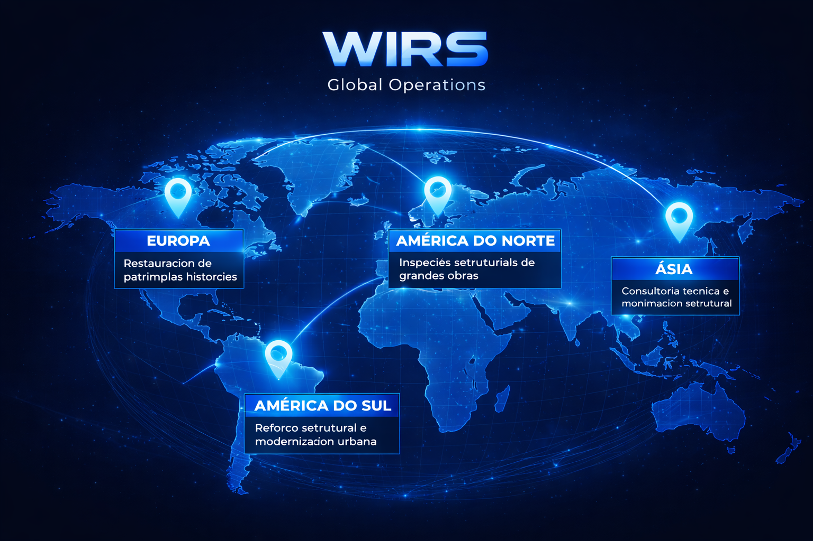

A WIRS – Works Inspection and Repair Solutions atua como
empresa multinacional, realizando projetos de inspeção, diagnóstico,
recuperação e restauração estrutural em diferentes países, sempre
respeitando normas técnicas, culturais e patrimoniais locais.
Presença global
Europa – restauração e preservação de patrimônios históricos;
América do Norte – inspeções estruturais em obras de grande porte;
América do Sul – reforço estrutural e modernização urbana;
Ásia – consultoria técnica e monitoramento estrutural avançado.

Imagem ilustrativa - feito por I.A.
Diferenciais internacionais
Equipes técnicas multilíngues e multidisciplinares;
Conformidade com normas internacionais de engenharia;
Respeito cultural e histórico em cada intervenção;
Tecnologia de monitoramento estrutural em tempo real.
O reconhecimento internacional da WIRS foi consolidado após o sucesso
do projeto de estabilização da Torre de Pisa, tornando a empresa
referência mundial em engenharia de recuperação estrutural,
preservação histórica e soluções técnicas de alta complexidade.